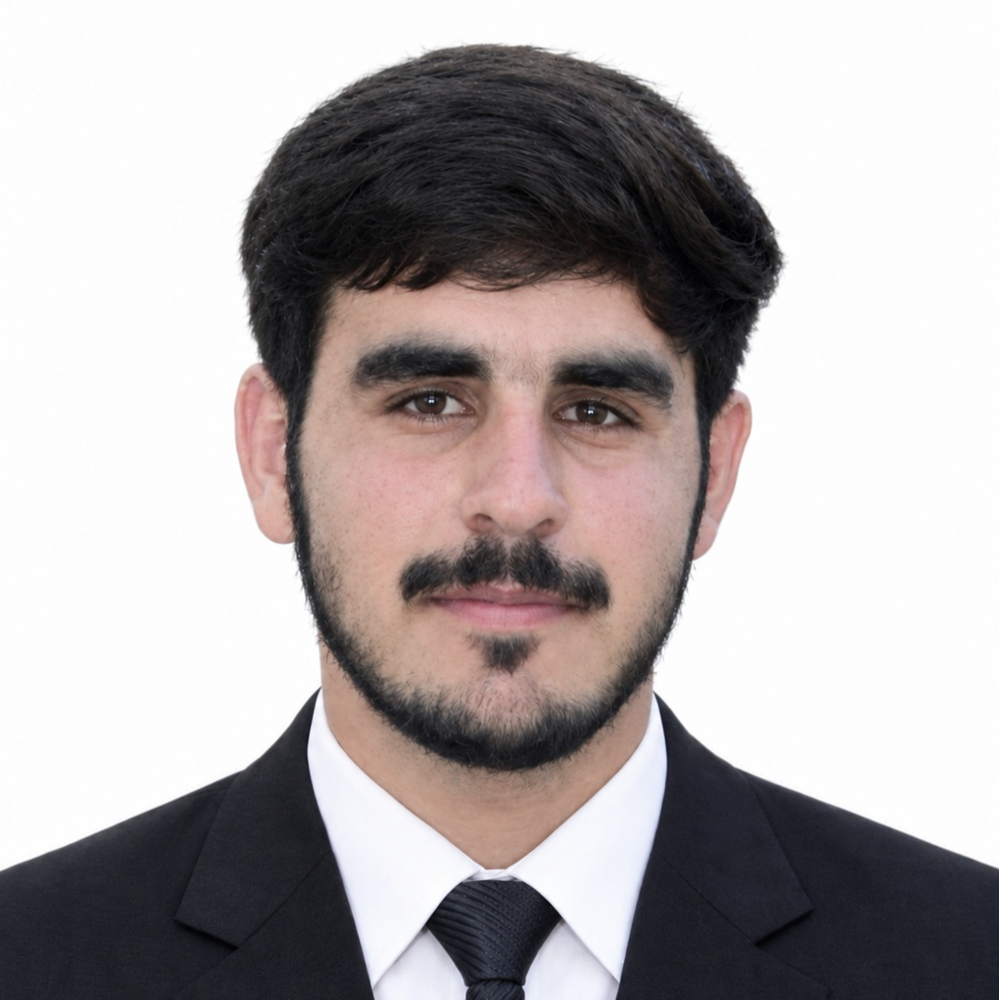

FAS Face Recognition Attendance System
End-to-end attendance management: live face recognition marks attendance automatically, backed by a Flask app and database. Includes branded UI and installable PWA support.
View on GitHub ↗Open to software & AI opportunities
BS Computer Science student (2022–2026) turning ideas into working products with Python, Flask and applied computer vision.

About
I study Computer Science at Govt. College of Management Sciences Ghallanai (Bacha Khan University, Charsadda). I like taking a practical idea all the way to something people can actually use backend, interface and the data in between.
My final year project is a face-recognition attendance system, and I’ve also built AI-powered tools on the Anthropic API.
Selected work
End-to-end attendance management: live face recognition marks attendance automatically, backed by a Flask app and database. Includes branded UI and installable PWA support.
View on GitHub ↗A personal profile chatbot that answers questions about my background, built with Flask and the Anthropic API.
Clean, fast, mobile-first interfaces focused on clarity including this portfolio.
Skills
Journey
Govt. College of Management Sciences Ghallanai · Bacha Khan University Charsadda
Open to entry-level roles, internships and collaborations.